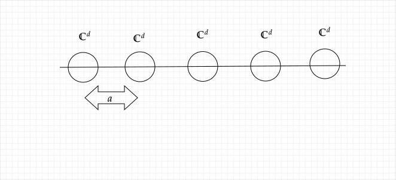
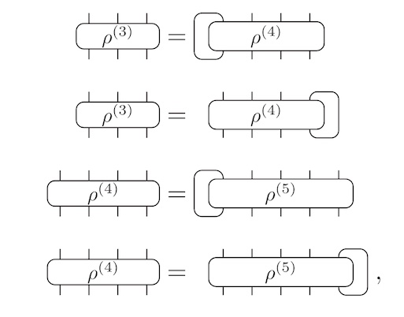
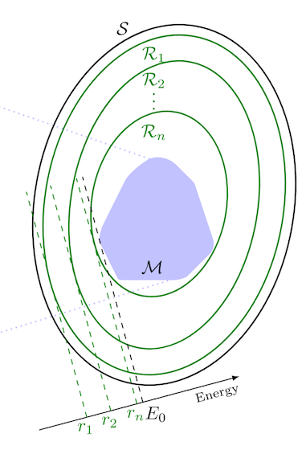
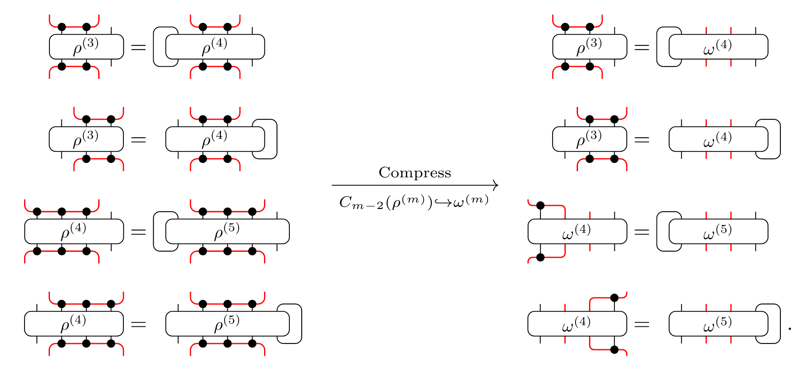

Motivation
We want to find the ground state of a local Hamiltonian for a spin-system on some lattice.
A spin-system is a collection spin each with Hilbert space $\mathbb{C}^d$. For simplicity, we will consider spins residing on a chain with uniform distance $a$.

The local Hamiltonian is denoted as $H = \sum_{i}^{N} h_i$ where $h_i$ only acts non-trivially on a few spins that are physically close together. For simplicity, we will consider a $2$-local Hamiltonian $H = \sum_{i}^{N} h_{i}^{(2)}$. More concretely, we could think of the Hamiltonian having the form:
\[H = \sum_{i}^{N} X_{i}X_{i+1} + Y_{i}Y_{i+1} + Z_{i}Z_{i+1}\]
The ground state energy may diverge in case $N \rightarrow \infty$. Therefore, we rephrase our goal into finding the ground state energy per-site for a Hamiltonian.
\[e_{0} = \min_{\ket{\psi}} \frac{1}{N} \bra{\psi} H \ket{\psi}\]
Due to translational invariance of the Hamiltonian, we would expect the ground state energy to also be reached with the following equation
\[e_{0} = \min_{\ket{\psi}} \bra{\psi} h_{i}^{(2)} \ket{\psi}\]
Since $h_{i}^{(2)}$ has no support on spins other than the two at location $i$ and $i+1$, we could safely simplify the minimization. Instread of trying to minimize $e_{0}$ over an exponentially large state $\ket{\psi}$, similar result is achieved when you do the minimization over reduced density matrix on spin $i$ and $i+1$, we denote it as $\rho^{(2)}$.
\[e_{0} = \min_{\rho^{(2)}} tr( \rho^{(2)} h_{i}^{(2)})\]
However, this naive reduction will bring problems because $\rho^{(2)}$ may not correspond to a physical state. Therefore, we need to add the constraint that $\rho^{(2)}$ be the reduced density matrix on two spins obtained from a reduced density matrix on three spins. This constraint alone will make the solution more physical. However, we would still improve by posting a series of constraint for our 1D example:
\[\rho^{(i)} = tr_{L}(\rho^{(i+1)}) = tr_{R}(\rho^{(i+1)})\]
The right most equation is referred to as the Locally Translation Invariant (LTI) conditions.
where $tr_{L/R}$ denotes the partial trace of the left/right most spin's Hilbert space. Using a graphical tensor network representation, we could visualize the constraints as follows:
[1]
When the above constraints are taken into account up to $n$ spins' reduced density matrix, we denote the all such two-spin reduce density matrix $\rho^{(2)}$ with set $\mathcal{S}$.
A good news is that $\mathcal{S}$ is a convex set. Furthermore, the $e = tr(\rho^{(2)} h_{i}^{(2)})$ is a linear function and the constrains are also linear. Therefore, we could use convex optimization to find the ground state energy per-site.
\[\rho^{(2)}\]
that gives the same $e = tr(\rho^{(2)} h_{i}^{(2)})$ forms a hyperplane. Finding $e_0$ is equivalent to finding the hyperplane with lowest energy. This is visualized in the following diagram
[1]
When we add more constraints, this amounts to cutting $\mathcal{S}$. When we follow the lines of previous reasoning and adds more restrictions in the form of
\[\rho^{(i)} = tr_{L}(\rho^{(i+1)}) = tr_{R}(\rho^{(i+1)})\]
we pay a price of adding exponentially more constraints since the dimension of $\rho^{(i)}$ is $d^{2i}$. Another observation is that not all constraints are essential to obtain the hyperplane with $e = e_{0}$. This promotes simplification to the algorithm. Rather than strictly requiring all the constraints be satisfied
\[\rho^{(i)} = tr_{L}(\rho^{(i+1)}) = tr_{R}(\rho^{(i+1)})\]
we could instead do isometries and pick out part of the reduced density matrix that are closestly related to ground states.
[1]